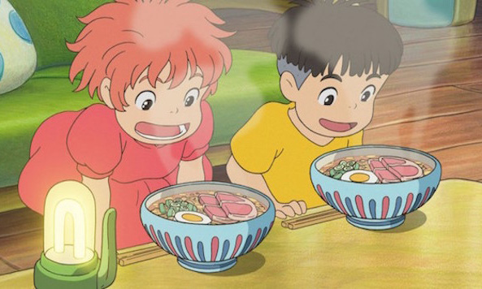
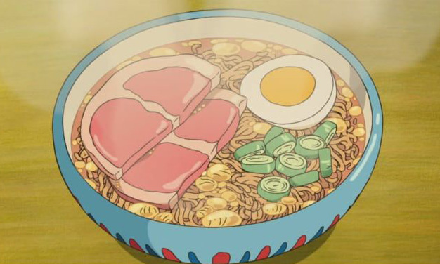

ponyo:
instant ramen


The ramen makes an appearance as the boy's mother, Lisa, cooks a meal for the two children during a powerful tsunami. The longer that viewers watch Lisa prepare the meal, the hungrier they get. Topped with a hard-boiled egg, green onions, and two pieces of ham, the ramen from Ponyo looks perfect.
Studio Ghibli's Ponyo was released in 2008. The film was written and directed by studio creator Hayao Miyazaki. Ponyo is a young goldfish who befriends a human boy. Her love for the boy, and a bit of the boy's blood, turns her into a human girl, where she experiences many things for the first time – like ramen.